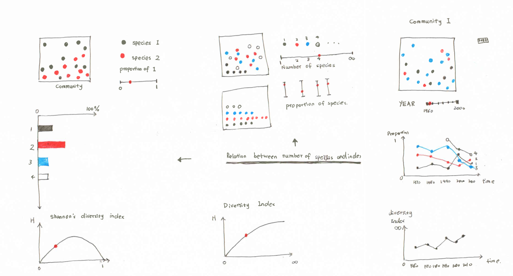

This informaiton visualization is to explain the Shannon-Wiener Index (a.k.a. Shannon's diversity index, the Shannon–Wiener index, the Shannon–Weaver index and the Shannon entropy) . This is a popular diversity index in the ecological field.
In ecology, it used to quantifies the uncertainty in predicting the species identity of an individual that is taken at random from the dataset. This index is mostly calculated as follows
When I'm studying ecology classes in School of Natural Resources and Environment, I had a hard time to understand the diversity index in ecology field. So, I try to visualize the index and make it easier to understand and remember.
This information visualization is for teaching first year graduate school students in an ecology class to understand the concept of Shannon’s diversity index. Specifically, I focused on how the number of species and proportion of individuals affect the diversity index of a community.
Information Visualization
Jan 2015 - March 2015
Information Visualization